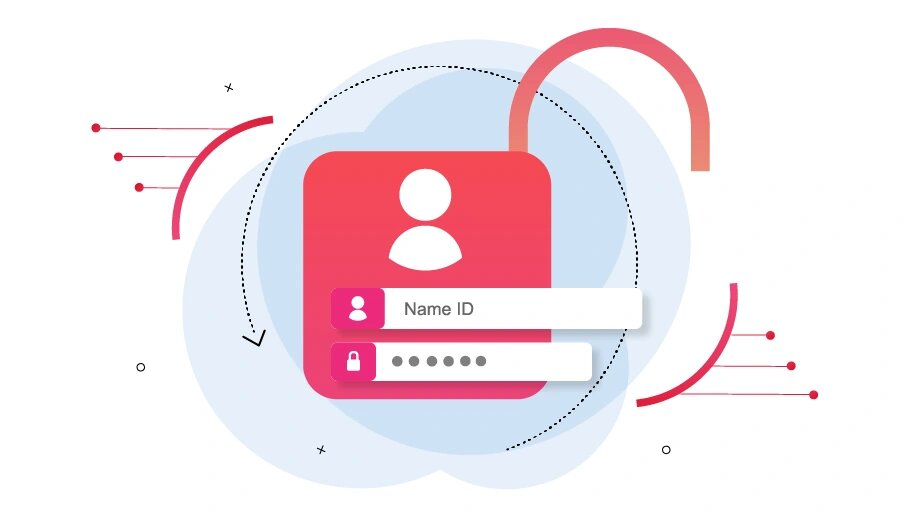

How to get instagram password
If you've forgotten your Instagram password, follow these steps to recover it:
Using the Instagram App Open the Instagram app on your phone. On the login screen, tap "Forgot password?" or "Trouble logging in?". Enter your username, email address, or phone number associated with your account and tap Next. Instagram will send a password reset link to your email or SMS. Check your inbox or messages and follow the instructions in the reset link. Create a new password and confirm it. Using a Web Browser Visit the Instagram Login Page. Click on "Forgot password?" below the password field. Enter your email, username, or phone number and click Send Login Link. Open your email or SMS to find the reset link. Click the link and follow the instructions to reset your password. If You Don’t Have Access to Email or Phone On the password reset page, tap "Need more help?". Fill out the form to verify your identity, providing as much detail as possible about your account. Instagram's support team may ask for additional verification, like a photo of yourself holding a specific code. Tips for Future Security Use a strong, unique password. Enable Two-Factor Authentication (2FA) for added security. Keep your email and phone number updated in your Instagram settings.